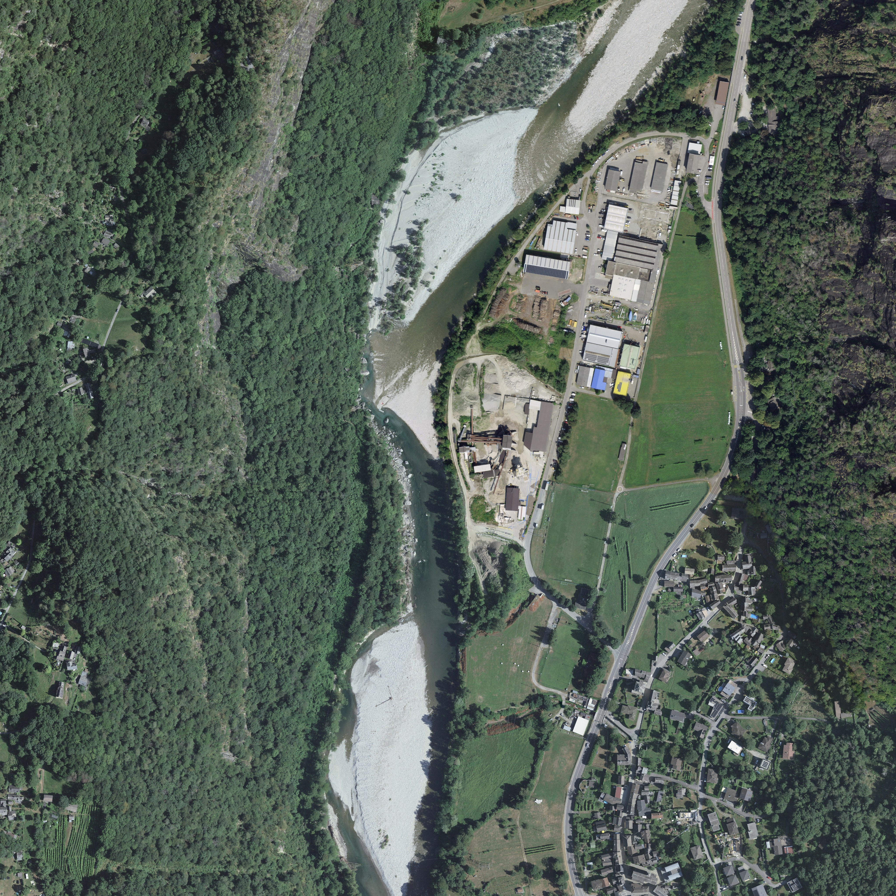

01 / VALE REAL
Um vale inteiro.
Em três dimensões.
Terreno, cobertura e volumes públicos da mesma área de referência. Acabamentos próximos são ilustrativos.
01 / VALE REAL
Terreno, cobertura e volumes públicos da mesma área de referência. Acabamentos próximos são ilustrativos.
WASD ou setas · arraste para olhar · Esc para sair

O 3D não está disponível neste navegador. O terreno, cobertura e volumes públicos continuam identificados; os acabamentos 3D são ilustrativos.
Voltar à apresentação ↗